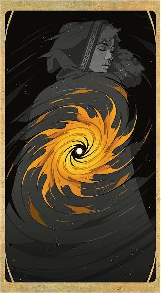

第十八章：虚空 Void虚空Void牌也许是万象无常牌 Deck of Many
Things
当中最可怕的一抽。抽到这张牌的人将面临可怕的命运：他们的身体倒下而灵魂被囚禁在遥远的物件中。这给DM、队伍和被囚禁角色的玩家带来了挑战。灵魂被带到哪里去了？队友要如何追回它？当角色无法行动时，角色的玩家该怎么办？
本章介绍了纸牌屋，一个在有人抽到虚空Void牌时才出现的遥远半位面中的地下城。被囚禁角色的灵魂在这里被用作诱饵，引诱其他角色进入凶猛怪物的巢穴。本章的开头是在一个角色与其他人分开时，给DM和面临挑战的玩家的建议。这种情况可以通过多种方式处理，DM可以选择适合其玩家和战役的那种。